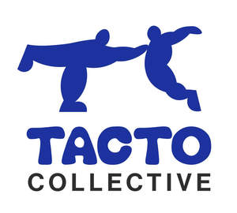

Trade Mark Journal No.2025/018 2 May 2025
UK00004186641 9 April 2025 (25)

- Class 25
- Clothing; Knitwear [clothing]; Jackets [clothing]; Ready-to-wear clothing; Woolen clothing; Furs [clothing]; Garments for protecting clothing; Layettes [clothing]; Clothing layettes; Linen clothing; Headbands [clothing]; Headbands for clothing; Gloves [clothing]; Gloves as clothing; Clothes; Aprons [clothing]; Kerchiefs [clothing]; Maternity clothing; Jerseys [clothing]; Denims [clothing]; Shorts [clothing]; Cashmere clothing; Capes (clothing); Oilskins [clothing]; Gabardines [clothing]; Silk clothing; Leather clothing; Clothing of leather; Leather (Clothing of -); Collars [clothing]; Parts of clothing, footwear and headgear; Knitted clothing; Veils [clothing]; Hoods [clothing]; Windproof clothing; Embroidered clothing; Corsets [clothing, foundation garments]; Wristbands [clothing]; Bandeaux [clothing]; Belts [clothing]; Belts for clothing; Rainproof clothing; Waterproof clothing; Casual clothing; Visors [clothing]; Jackets being sports clothing; Jackets (Stuff -) [clothing]; Stuff jackets [clothing]; Bottoms [clothing]; Playsuits [clothing]; Ready-made clothing; Clothing for leisure wear; Latex clothing; Trunks being clothing; Woven clothing; Infant clothing; Leisure clothing; Drawers [clothing]; Drawers as clothing; Ties [clothing]; Clothing for sports; Sports clothing; Athletic clothing; Clothing for children; Muffs [clothing]; Bodies [clothing]; Clothing for babies; Tops [clothing]; Clothing for infants; Clothing for cycling; Weatherproof clothing; Pockets for clothing; Fabric belts [clothing]; Water-resistant clothing; Triathlon clothing; Handwarmers [clothing]; Clothing for skiing; Beach clothing; Chaps (clothing); Thermal clothing; Cowls [clothing]; Men's clothing; Dance clothing; Mitts [clothing]; Braces for clothing; Underwear; Jockstraps [underwear]; Briefs [underwear]; Sweat-absorbent underclothing [underwear]; Trunks [underwear]; Sweat-absorbent underwear; Underwear (Anti-sweat -); Anti-sweat underwear; Maternity underwear; Boy shorts [underwear]; Disposable underwear; Knitted underwear; Undergarments; Underwear for women; Thermal underwear; Underpants; Babies' pants [underwear]; Men's underwear; Functional underwear; Underclothes; Women's underwear; Long underwear; Gussets for underwear [parts of clothing]; Nappy pants [clothing]; Teddies [undergarments]; Panties; Ladies' underwear; Lingerie; Slips [undergarments]; Knickers; Pants; Underpants for babies; G-strings; Babies' pants [clothing]; Trousers shorts; Thongs; Jogging bottoms [clothing]; Underclothing; Maternity lingerie; Teddies [underclothing]; Thong sandals; Denim pants; Camouflage pants; Waterproof pants; Leggings [trousers]; Dress pants; Pajamas; Undershirts; Trouser socks; Underclothing (Anti-sweat -); Anti-sweat underclothing; Corsets [underclothing]; Socks and stockings; Sweat-absorbent underclothing; Bodices [lingerie]; Pyjamas; Braces for clothing [suspenders]; Bra straps [parts of clothing]; Jogging pants; Anti-perspirant socks; Leather pants; Trousers; Braces [suspenders] for clothing / Suspenders [braces] for clothing; Baby pants; Gussets for tights [parts of clothing]; Maternity shorts; Slips [underclothing]; Swimsuits; Babies' undergarments; Hosiery; Beach clothes; Slips [clothing]; Nipple pasties being underclothing; Sleep pants; Maillots [hosiery]; Cycling pants; Sweat-absorbent socks; Pantyhose; Bed socks; Bras; Sweatpants; Moisture-wicking sports pants; Warm-up pants; Womens' undergarments; Pajama bottoms; Pyjamas [from tricot only]; Nightwear; Baby doll pyjamas; Tracksuit bottoms; Corduroy trousers; Nightdresses; Lounge pants; Tracksuit tops; Corduroy pants; Nighties; Pinafore dresses; Chemise tops; Loungewear; Sleepwear; Corduroy shirts; Fleece shorts; Bib shorts; Nightshirts; Long-sleeved shirts; Short-sleeved shirts; Waterproof trousers; Casual trousers; Capri pants; Short-sleeved T-shirts; Sleepsuits; Maternity pants; Ski trousers; Maternity sleepwear; Dungarees; Men's dress socks; Sleep shirts; Dress shirts; Sleeveless pullovers; Pirate pants; Nightgowns; Open-necked shirts; Nurse pants; Woollen tights; Trousers for sweating; Shorts; Chino pants; Bib tights; Turtleneck shirts; One-piece playsuits; Trousers for children; Romper suits; Collared shirts; Short-sleeve shirts; Jumper dresses; Rugby shorts; Bed jackets; Golf trousers; Sleeveless jackets; Trousers of leather; Night shirts; Maternity leggings; Culottes; Knit shirts; Baselayer bottoms; Chemises; Swim shorts; Snowboard trousers; Dresses for evening wear; Sleeved jackets; Polo knit tops; Horse-riding pants; Bootees (woollen baby shoes); Undershirts for kimonos (juban); Baby bottoms; Sweatshorts; Safari jackets; Lounging robes; Hooded sweat shirts; Sleeping garments; Woollen socks; Maternity shirts; Culotte skirts; Hooded pullovers; Tracksuits; Ski pants; Evening dresses; Hunting pants; Button-front aloha shirts; Gym shorts; Bibs, sleeved, not of paper; Pinafores; Fitted swimming costumes with bra cups; Riding trousers; V-neck sweaters; Weatherproof pants; Baby bodysuits; Yoga pants; Teddies; Hooded sweatshirts; Gymwear; Casualwear; Bralettes; Sportswear; Beachwear; Knitwear; Leisurewear; Swimwear; Outerwear; Camisoles; Shapewear; Menswear; Plush clothing; Shoes for leisurewear; Sweatshirts; Pullovers; Fleece pullovers; Cashmere scarves; Negligees; Bodysuits; Cardigans; Turtleneck pullovers; Quilted jackets [clothing]; Rompers; Sundresses; Denim jackets; Kaftans; Yoga shirts; Gloves for apparel; Casual shirts; Sweaters; Denim jeans; Hoodies; Baby layettes for clothing; Casual footwear; Maternity dresses; Undershirts for kimonos (koshimaki); Undershirts for kimonos [koshimaki]; Jogging sets [clothing]; Tankinis; Moisture-wicking sports bras; Muumuus; Body linen [garments]; Socks; Slipper socks; Anklets [socks]; Toe socks; Ankle socks; Footless socks; Non-slip socks; Yoga socks; Thermal socks; Men's socks; Tennis socks; Socks for men; Sports socks; Water socks; Pop socks; Inner socks for footwear; Sock suspenders; American football socks; Japanese style socks (tabi); Insoles [for shoes and boots]; Insoles for shoes and boots; Knitted baby shoes; Knee-high stockings; Slippers; Japanese style socks (tabi covers); Shoes; Knitted gloves; Valenki [felted boots]; Socks for infants and toddlers; Esparto shoes or sandles; Tongues for shoes and boots; Legwarmers; Pullstraps for shoes and boots; Mittens; Stockings; Booties; Slip-on shoes; Stockings (Heel pieces for -); Heel pieces for stockings; Pedicure slippers; Esparto shoes or sandals; Tights; Lace boots; Beanie hats; Waterproof shoes; Foam pedicure slippers; Sandals and beach shoes; Insoles for footwear; Hiking shoes; Rubber shoes; Sneakers [footwear]; Slipper soles; Heel protectors for shoes; Shoe soles; Footwear soles; Soles for footwear; Shoes for foot volleyball; Foot volleyball shoes; Yoga shoes; Wooden shoes [footwear]; Jumpers [sweaters]; Heel pieces for shoes; Snow pants; Sneakers; High-heeled shoes; Leather slippers; Sandals; Soccer shoes; Hidden heel shoes; Knit jackets; Tank tops; Coats (Top -); Top coats; Top hats; Tube tops; Tops; Halter tops; Vest tops; Crop tops; Baselayer tops; Turtleneck tops; Baby tops; Hooded tops; Knit tops; Fleece tops; Maternity tops; Rugby tops; Stockings (Sweat-absorbent -); Sweat-absorbent stockings; Stockings [sweat-absorbent]; Flip-flops for use as footwear; Mountaineering shoes; Knee warmers [clothing]; Knitted tops; Footless tights; Fingerless gloves as clothing; Baby shoes; Boxer shorts; Boxing shorts; Boxer briefs; Boxing shoes; Sports pants; Sport shirts; Tennis shorts; American football shorts; American football pants; Sports singlets; Moisture-wicking sports shirts; Rugby shirts; Sports shirts; Cycling shorts; Football shirts; Sweat shorts; Judo uniforms; Golf shorts; Tennis shirts; Padded shorts for athletic use; Clothing for wear in wrestling games; Soccer shirts; American football shirts; Singlets; Clothes for sport; Taekwondo uniforms; Sweat pants; Padded pants for athletic use; Suspender belts for men; Briefs; Gloves for cyclists; Judo suits; Padded shirts for athletic use; Karate uniforms; Shirts; Trainers; Sports clothing [other than golf gloves]; Walking shorts; Sliding shorts; Athletic tights; Sweat shirts; Studs for football shoes; Men's and women's jackets, coats, trousers, vests; Polo shirts; Sport stockings; Bermuda shorts; Clothes for sports; Gym boots; Gym suits; Jogging shoes; Jogging outfits; Exercise wear; Gymnastic shoes; Tennis sweatbands; Clothing for gymnastics; Peignoirs; Formalwear; Surfwear; Casual jackets; Leisure footwear; Footwear; Footwear for snowboarding; Casual wear; Shoes for casual wear; Men's sandals; Sports garments; Rainwear; Jeans; Footwear for men; Men's suits; Footwear for women; Footwear for sports; Sports footwear; Footwear for sport; Footwear for use in sport; Footwear [excluding orthopedic footwear]; Gilets; Trainers [footwear]; Coats of denim; Denim coats; Golf footwear; Beach footwear; Athletics footwear; Foulards [clothing articles]; Overshirts; Clothing for cyclists; T-shirts; Beanies; Camouflage shirts; Tee-shirts; Fleece jackets; Shirts for suits; Jackets; Mock turtleneck shirts; Snowboard jackets; Turtleneck sweaters; Balaclavas; Tank-tops; Camouflage jackets; Turtlenecks; Bandanas; Parkas; Sweat jackets; Anoraks [parkas]; Printed t-shirts; Sleeveless jerseys; Jumpers [pullovers]; Fleece vests; Hunting shirts; Polar fleece jackets; Hooded bathrobes; Trenchcoats; Scarves; Golf shirts; Sheepskin jackets; Sports shirts with short sleeves; Polo sweaters; Blouson jackets; Jumpsuits; Windcheaters; Woven shirts; Mock turtleneck sweaters; Sweatsuits; Aloha shirts; Sports jackets; Fur coats and jackets; Fishing shirts; Bandanas [neckerchiefs]; Overcoats; Scarfs; Stuff jackets; Hats; Waistcoats [vests]; Fur jackets; Bandannas; Windproof jackets; Ramie shirts; Pique shirts; Bomber jackets; Under shirts; Blazers; Toques [hats]; Party hats [clothing]; Mufflers [clothing]; Jerseys; Collars for dresses; Wind-resistant jackets; Padded jackets; Weatherproof jackets; Caps; Caps with visors; Caps [headwear]; Caps being headwear; Skull caps; Baseball caps; Swimming caps [bathing caps]; Peaked caps; Knitted caps; Baseball caps and hats; Cycling caps; Waterpolo caps; Sports caps and hats; Bucket caps; Sports caps; Bathing caps; Shower caps; Caps (Shower -); Swim caps; Flat caps; Swimming caps; Garrison caps; Golf caps; Knot caps; Cap visors; Cap peaks; Peaks (Cap -); Mitres [hats]; Bonnets [headwear]; Miters [hats]; Bobble hats; Baseball hats; Visors [headwear]; Visors being headwear; Combinations [clothing]; Paper hats for use as clothing items; Gussets [parts of clothing]; Linings (Ready-made -) [parts of clothing]; Ready-made linings [parts of clothing]; Gussets for stockings [parts of clothing]; Sun visors [headwear]; Sun hats; Visors; Swim trunks; Swim suits; Swim briefs; Swim wear for children; Swimming trunks; Swimming suits; Swimming costumes; Swim wear for gentlemen and ladies; Bathing trunks; Trunks (Bathing -); Snoods [scarves]; Silk scarves; Head scarves; Neck scarves; Shawls and headscarves; Shoulder scarves; Shawls; Neck scarves [mufflers]; Mufflers [neck scarves]; Mufflers as neck scarves; Shawls and stoles; Neck scarfs [mufflers]; Neck tube scarves; Headbands; Wearable blankets in the nature of blankets with sleeves; Kerchiefs; Capelets; Woolly hats; Headscarves; Fur hats; Hats (Paper -) [clothing]; Paper hats [clothing]; Headscarfs; Ushankas [fur hats]; Caftans; Turbans; Shawls [from tricot only]; Fascinator hats; Fashion hats; Cloche hats; Blouses; Headdresses [veils]; Neckties; Fake fur hats; Quilted vests; Fur stoles; Stoles (Fur -); Wraps [clothing]; Thermal headgear; Thermally insulated clothing; Thermal gloves for touchscreen devices; Strapless bras; Strapless brassieres; Girdles [corsets]; Straps for bras; Bra extenders; Corsets; Bustiers; Waist cinchers; Bra straps; Brassieres; Corsets [foundation clothing]; Corsets being foundation clothing; Girdles; Adhesive bras; Nursing bras; Monokinis; Gussets for leotards [parts of clothing]; Bra strap extenders; Bridal garters; Waistbands; Sports bras; Underclothing for women; Dresses; Bridal gowns; Bikinis; Linen (Body -) [garments]; Maillots; Adhesive brassieres; Leotards; Maternity wear; Suspender belts for women; Foundation garments; Underarm gussets [parts of clothing]; Body stockings.
TACTO COLLECTIVE LTD